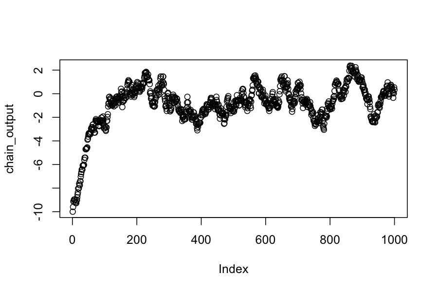
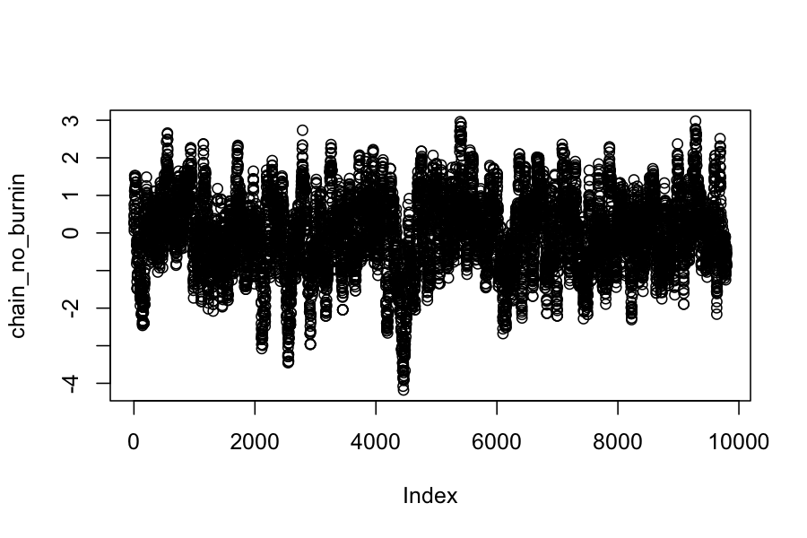
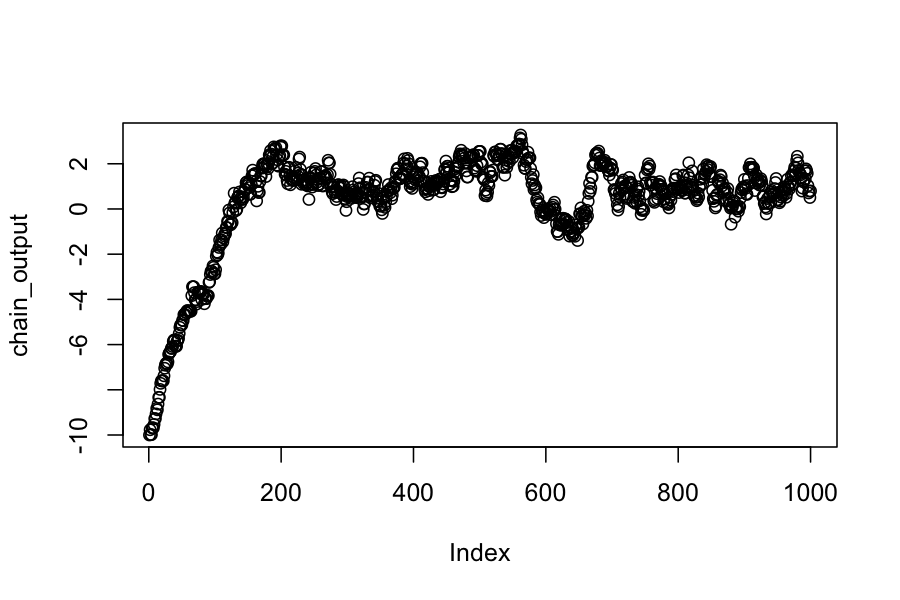
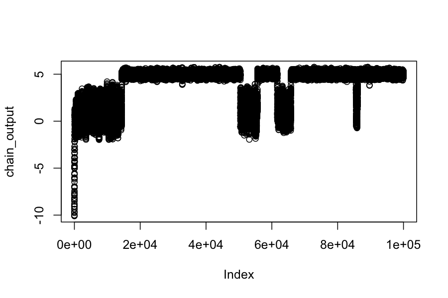
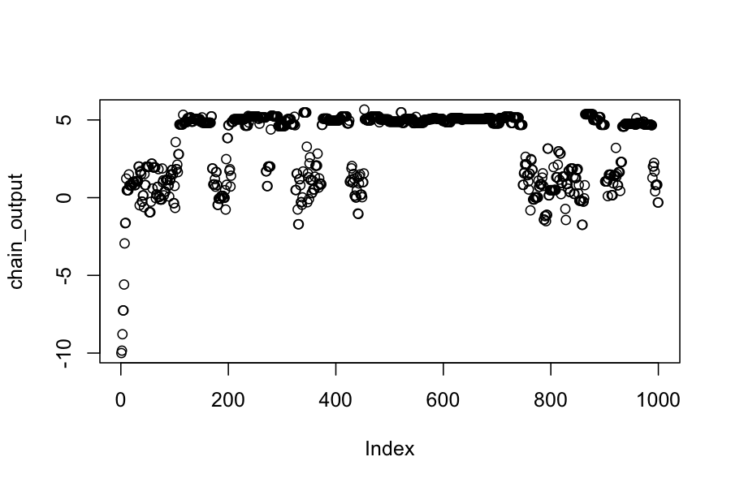

Today: Metropolis Hastings
Reading:
Lange, Chapter 24.1, 24.2
More fun: Section 1 of this paper has an interesting example
Some practical advice about using Markov chains by Charles Geyer: One long run, Burn in is unnecessary, Bogosity of MCMC diagnostics
Sample from any probability distribution \(\pi\).
Compute expected value of functions of random variables drawn from these distributions, \(E_{X \sim \pi}(f(X))\)
Last time we saw that if a Markov chain has a invariant distribution \(\pi\), we can estimate \(E_{X \sim \pi}(f(X))\) as \(\frac{1}{n} \sum_{i=1}^n f(X_i)\), where \(X_1,X_2, \ldots, X_n\) are drawn from the Markov chain.
Metropolis-Hastings will let us specify a invariant distribution \(\pi\) and build a Markov chain having \(\pi\) as its invariant distribution.
Start off with a Markov chain that has the wrong invariant distribution, e.g., a random walk
Modify the chain so that it spends more time in regions of high probability under the target distribution.
Given:
A proposal distribution \(q\) such that \(q(y \mid x) = q(x \mid y)\)
A target invariant distribution \(\pi\)
Pick a starting value for the chain \(X_0\).
For \(i = 1, \ldots, n\):
Pick a proposed move from \(Y \sim q(\cdot \mid X_{i-1})\)
Compute the acceptance probability: \[ a = \text{min} \left \{ \frac{\pi(Y)}{\pi(X_{i-1})}, 1 \right\} \]
Let \(X_i\) be \[ X_i = \begin{cases} Y & \text{w.p. } a \\ X_{i-1} & \text{w.p. }1 - a \end{cases} \]
Note:
If the proposed state has a higher probability than the current state, we move there deterministically.
If the proposed state has a lower probability than the current state, we move there with probability proportional to the ratio of the probabilities.
Last time we talked about conditions for a Markov chain to have an invariant distribution.
Some Markov chains are “reversible”. This is a stronger condition than the chain simply having an invariant distribution.
To check whether a chain is reversible, we check the “detailed balance” condition: A Markov chain with transition probability matrix \(P\) and invariant distribution \(\pi\) satisfies the detailed balance equations and is reversible if \[ \pi_i P_{ij} = \pi_j P_{ji} \]
Let \(X_i\) and \(X_j\) be any two elements in the state space and let \(a_{ij}\) be the acceptance probability given that we start at \(X_i\) and propose \(X_j\).
Suppose further that \(\pi(X_j) \le \pi(X_i)\) so that \(a_{ij} \le 1\)
We can check that \(\pi\) is the invariant distribution by checking detailed balance:
\[ \begin{align*} \pi(X_i)q(X_j \mid X_i) a_{ij} &= \pi(X_i) q(X_j \mid X_i) \frac{\pi(X_j)}{\pi(X_i)} \\ &= q(X_j \mid X_i) \pi(X_j) \\ &= \pi(X_j) q(X_i \mid X_j) a_{ji} \end{align*} \]
The last line follows because \(a_{ji} = 1\) and the proposal distribution is symmetric.
Given:
A proposal distribution \(q\), not necessarily such that \(q(y \mid x) = q(x \mid y)\)
A target invariant distribution \(\pi\)
Pick a starting value for the chain \(X_0\).
For \(i = 1, \ldots, n\):
Pick a proposed move from \(Y \sim q(\cdot \mid X_{i-1})\)
Compute the acceptance probability: \[ a = \text{min} \left \{ \frac{\pi(Y)q(X_{i-1} \mid Y)}{\pi(X_{i-1})q(Y \mid X_{i-1})}, 1 \right\} \]
Let \(X_i\) be \[ X_i = \begin{cases} Y & \text{w.p. } a \\ X_{i-1} & \text{w.p. }1 - a \end{cases} \]
Notes:
The difference in the acceptance probability accounts for the fact that the proposal distribution favors some parts of the space over others.
You can derive the acceptance probability from the detailed balance equations or check the detailed balance equations with the acceptance probabilities given here.
Proposal distribution: \(q(x \mid y) = N(y, .3)\)
Target distribution: \(\pi(x) = N(0,1)\)
Start at \(X_0 = -10\)
sample_with_symmetric_proposal <-
function(proposal_function, target_distribution, current_state) {
proposal <- proposal_function(current_state)
acceptance_probability <- min(1, target_distribution(proposal) / target_distribution(current_state))
if(runif(1) <= acceptance_probability) {
return(proposal)
} else {
return(current_state)
}
}## The proposal distribution is normal, centered at the current state, standard deviation .3
proposal_function <- function(x) rnorm(n = 1, mean = x, sd = .3)
## The target distribution is N(0,1)
target_distribution <- dnorm
## check the sampling:
sample_with_symmetric_proposal(proposal_function, target_distribution, -10)## [1] -10n_samples <- 1000
chain_output <- numeric(n_samples)
chain_output[1] <- -10
for(i in 2:n_samples) {
chain_output[i] <- sample_with_symmetric_proposal(proposal_function, target_distribution, chain_output[i-1])
}
plot(chain_output)
## [1] -0.9162604## [1] 1.871455Notice:
We see that before about 200 steps, the chain has not converged to its invariant distribution.
Even after it has converged, the elements in the chain are not independent.
Let’s run the chain longer and discard the first 200 steps as “burn-in”
n_samples <- 10000
chain_output <- numeric(n_samples)
chain_output[1] <- -10
for(i in 2:n_samples) {
chain_output[i] <- sample_with_symmetric_proposal(proposal_function, target_distribution, chain_output[i-1])
}
chain_no_burnin <- chain_output[201:n_samples]
plot(chain_no_burnin)
## [1] -0.03140313## [1] 1.019056Note:
This chain looks like it has reached its invariant distribution, and we can confirm that by checking that the sample expected values match what they should be for a \(N(0,1)\) distribution.
The ergodic theorem doesn’t require that we discard the burn-in period, but people often do anyway.
Proposal distribution: \(q(x \mid y) = N(y, .3)\)
Target distribution: Let \(\phi_{\mu, \sigma}(x)\) be the pdf for a \(N(\mu, \sigma)\) random variable. Our target distribution is \(\pi(x) = .25 \phi_{1, 1}(x) + .75 \phi_{5,.2}(x)\).
Start at \(X_0 = -10\)
## The proposal distribution is normal, centered at the current state, standard deviation .3
proposal_function <- function(x) rnorm(n = 1, mean = x, sd = .3)
## The target distribution is a mixture of N(1,1) and N(5,.2)
target_distribution <- function(x) .25 * dnorm(x, mean = 1, sd = 1) + .75 * dnorm(x, mean = 5, sd = .2)
n_samples <- 1000
chain_output <- numeric(n_samples)
chain_output[1] <- -10
for(i in 2:n_samples) {
chain_output[i] <- sample_with_symmetric_proposal(proposal_function, target_distribution, chain_output[i-1])
}
plot(chain_output)
## [1] 0.3720607## [1] 2.266502Notice:
Still takes about 200 steps to get to something that looks like a invariant distribution
No samples with values above 2!
Let’s try running the chain a lot longer:
n_samples <- 100000
chain_output <- numeric(n_samples)
chain_output[1] <- -10
for(i in 2:n_samples) {
chain_output[i] <- sample_with_symmetric_proposal(proposal_function, target_distribution, chain_output[i-1])
}
plot(chain_output)
## [1] 4.042973## [1] 1.780207What’s happening?
Another way to fix this: change the proposal distribution.
proposal_function <- function(x) rnorm(n = 1, mean = x, sd = 2)
n_samples <- 1000
chain_output <- numeric(n_samples)
chain_output[1] <- -10
for(i in 2:n_samples) {
chain_output[i] <- sample_with_symmetric_proposal(proposal_function, target_distribution, chain_output[i-1])
}
plot(chain_output)
## [1] 3.376655## [1] 2.2654Why not always have a really diffuse proposal distribution?
Tradeoff between exploring the space well and proposing high probability moves.
With a diffuse proposal distribution, many of the proposals are to low-probability areas, and the chain stays in the same place a lot.
Overall:
Choosing the proposal distribution involves balancing between moving long distances and having a high proportion of the moves accepted.
This will be problem-specific, and you often have to experiment with different proposal distributions.
There are more formal diagnostics for assessing convergence, but you should really look at the plots of the parameters.
You can never be sure that your chain isn’t completely missing part of the space.
Metropolis Hastings is a simple, general-purpose method for creating a Markov chain with a specified invariant distribution. It is particularly useful when:
You only know the target distribution up to a constant of proportionality.
All the regions of high density in the target distribution are connected to each other.
The target distribution is high dimensional.
You should be scared because:
You can never be sure that your chain has explored the space adequately
There is theory on convergence times, but they tend to say you have to run your chain past the heat death of the universe.
Next time: